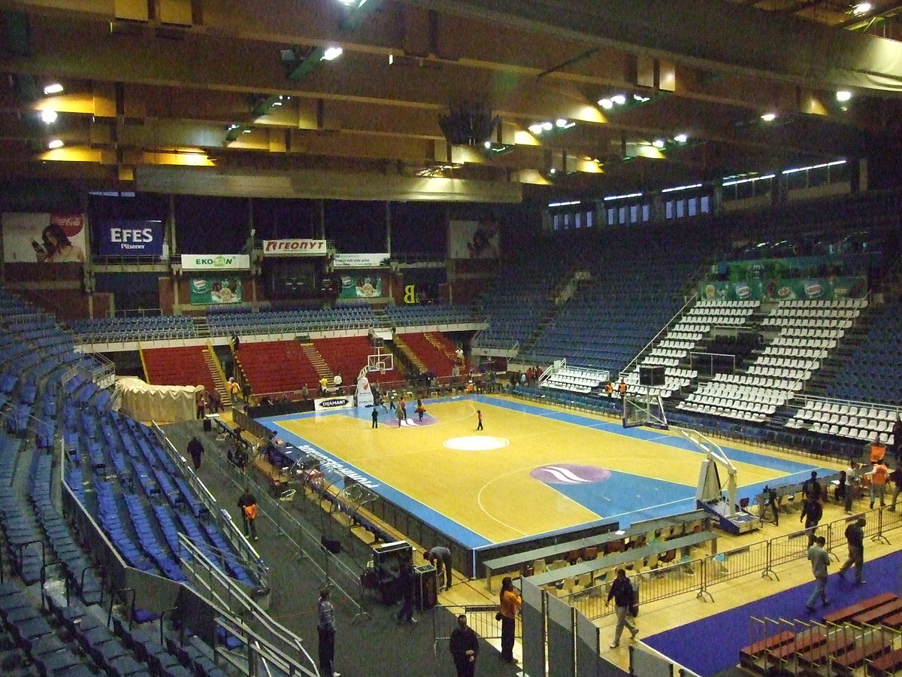
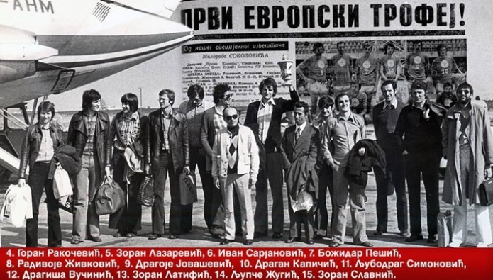
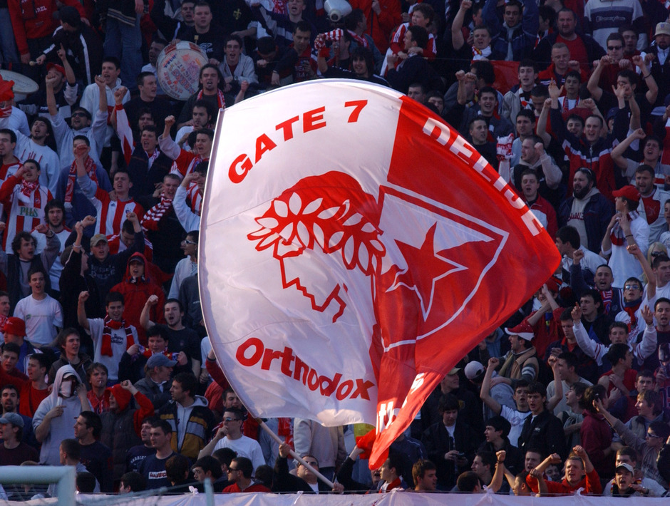

Спортско друштво Црвена Звезда
О клубу
КК Црвена Звезда, српски је професионални кошаркашки клуб из Београда. Део је спортског друштва Црвена Звезда. Црвена Звезда се такмичи у Кошаркашкој лиги Србије и домаћем купу Радивоја Кораћа, и није никада испадала из прве националне лиге. Такође, чини Јадранску кошаркашку асоцијацију и такмичи се у АБА лиги, која одређује који ће се тимови такмичити у Евролиги а који у Еврокупу. Према УЛЕБ-овој листи Звезда је најбоље рангиран клуб од свих српских клубова, као и свих клубова из Јадранске лиге.

Црвена звезда као домаћин утакмице игра у хали Пионир (сада Александар Николић), саграђеној 1973. године, са капацитетом од 5.878 седећих места, док утакмице у Европским такмичењима игра и у Штарк арени са предвиђеним капацитетом од 18.386 седећих места. Навијачи Црвене звезде се називају Делије.
Историја
Кошаркашки клуб Црвена звезда као посебна секција основан је истог дана када и Спортско друштво, 4. марта 1945. године. Први руководилац кошаркашке секције била је Мира Петровић. Првих десет година постојања, представља златно доба КК Црвена звезда. Освојено је десет узастопних титула државног првака. У сезони 1947. уведено играње квалификација. Тада је Црвена звезда остварила једну од најубедљивијих победа у првенствима — и то над Пролетером из Приштине од 110 : 15. Године 1952. уведен је систем играња кроз регионалне групе, а затим се играо завршни турнир у Зрењанину. Звезда је победила све своје противнике и заслужено одбранила титулу. Црвена звезда је током тих првих 10 година поред 10 освојених титула у 149 утакмица остварила 125 победа, имала 4 нерешене утакмице и претрпела 20 пораза.
Сезона 1970/71, када је Југословенски шампионат у питању, завршена је на трећој позицији иза Југопластике и Локомотиве, али је зато освојен први трофеј у националном купу.
У осмини финала великом разликом је побеђен Партизан (103 : 71), у четвртфиналу тесна победа над Југопластиком (78 : 76), док је у борби за финале елиминисан КК Задар (89 : 72). Финале је одиграно у Љубљани, а Звезда је савладала домаћу Олимпију резултатом 82 : 70.
Наредна сезона 1971/72. била је најуспешнија у дотадашњој историји.У драматичној завршници Југословенске лиге, Црвено-бели су дошли до 12. шампионског трофеја. Црвена звезда и Југопластика су у регуларном делу шампионата остварили идентичан скор од 17 победа и 5 пораза, тако да је о прваку одлучивала мајсторица. У одлучујућем мечу Црвено-бели кошаркаши славили су са 75 : 70 и дошли до нове титуле. Поред овог успеха, пулени Братислава Ђорђевића остварили су и велики успех на међународној сцени. У оквиру Купа победника купова, Црвено-бели су дошли до првог европског финала. У финалу противник је била италијанска екипа Симентала која је у неизвесној завршници ипак била успешнија и резултатом 74 : 70 дошла до победе.
Наредна сезона 1973/74, остаје златним словима уписана не само у аналима КК Црвена звезда већ и тадашње југословенске кошарке, јер је ККЦК остварио до тада највећи успех — освојивши Куп европских победника купова.

После већих криза, сезона 1997/98. значила је буђење клуба. Остварен је велики успех на међународној сцени у Купу Радивоја Кораћа.
Навијачи
Од самог заснивања клуба најистакнутије личности друштва биле су често виђене на утакмицама на Малом Калемегдану. Један од честих посетилаца кошаркашких утакмица и мушке и женске селекције Црвене звезде је био Иво Андрић. Све утакмице су од почетка биле веома посећене. Популарност је расла са сталним успесима и кошаркашког клуба, али пре свега фудбалског клуба. Играчи свих клубова у оквиру Спортског друштва често међусобно посећују утакмице у свим такмичењима. Црвена звезда је српски клуб са највећим бројем навијача према већини истраживања која су спроведена у Београду, а и на територији читаве Србије
Организована група навијача Црвене звезде се називају Делије. Ова навијачка група настала је уједињењем дотадашњих мањих навијачких група 7. јануара 1989. Делије представљају једну од најпознатијих навијачких група на свету. Према избору организације „Свет Ултраса” која на друштвеним мрежама окупља преко 400.000 навијача, група Делије је изабрана за најбољу навијачку групу на свету у 2014. години. Навијачи Црвене звезде и Олимпијакоса развили су дубоко пријатељство. Навијачи оба тима су себе назвали „Православна браћа” (енгл. Orthodox Brothers).

У ову братску унију навијача касније су се укључили и навијачи Спартака из Москве. Управо су навијачи клуба са Малог Калемегдана приредили рекордну гледаност неке кошаркашке утакмице под покровитељством УЛЕБ-а. То се десило током четвртфинала Еврокупа 2014. године против екипе Будивељника, када су у Комбанк арени била 24.232 навијача.
Рекорди
- Најубедљивија победа: Црвена Звезда - Космај 118 : 4, 1946. године.
- Најубедљивији пораз: Олимпија — Црвена звезда 140 : 86, 1963. године.
- Највише постигнутих поена: против Напретка из Алексинца — 150, у сезони 1990/91.
- Најмање постигнутих поена: против Партизана — 13, 1949. године.
- Највише победа у националним првенствима: 28 у првенству 1992/93.
- Највише победа у свим такмичењима током једне сезоне: 67, сезона 2016/17.
- Најмање пораза у првенству: нити један пораз у сезони 1947. године.
- Највише одиграних званичних утакмица током једне сезоне: 84, сезона 2016/17.
- Највише узастопних победа у Јадранској лиги: 20, у сезонама 2014/15. и 2016/17.